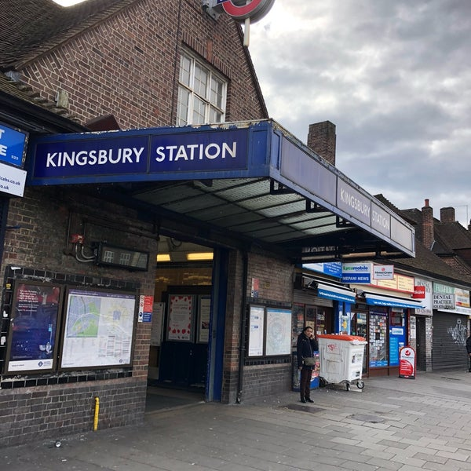
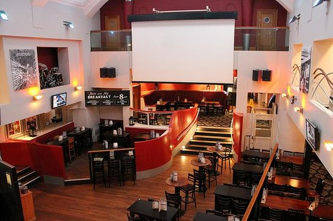
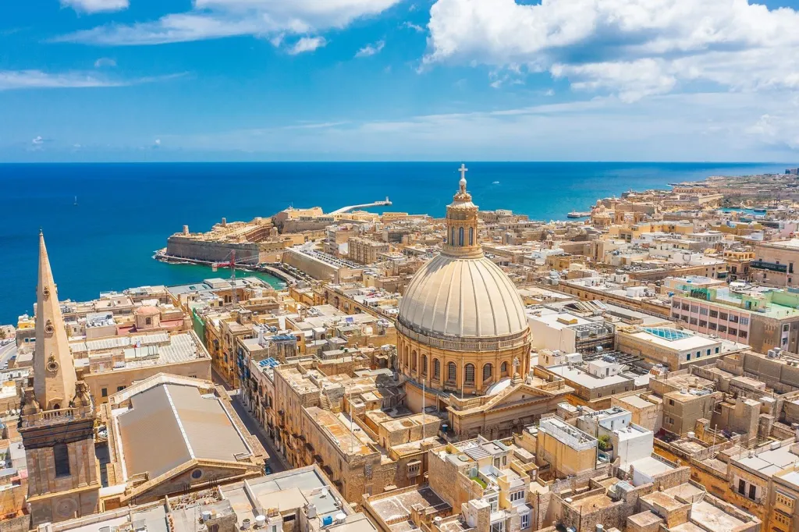
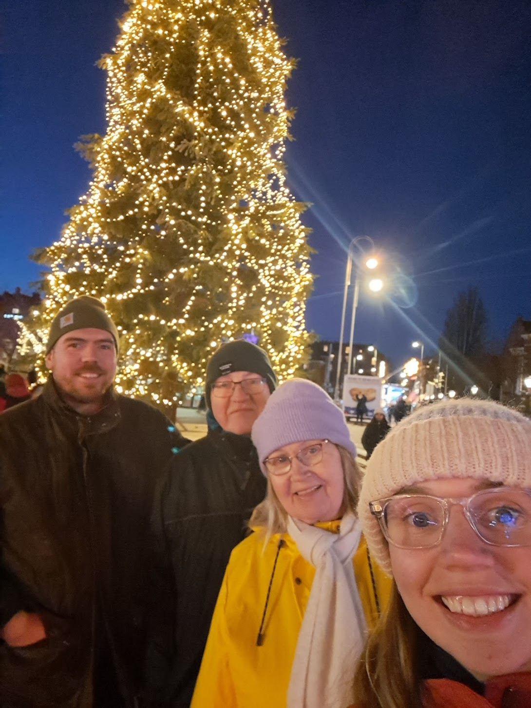
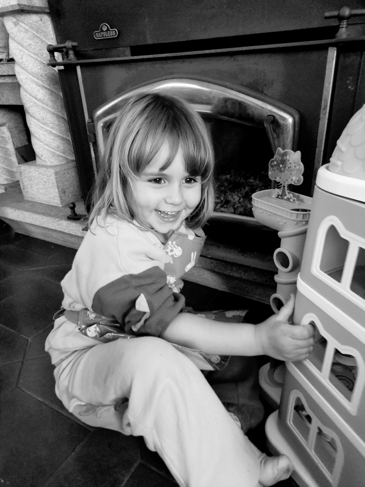
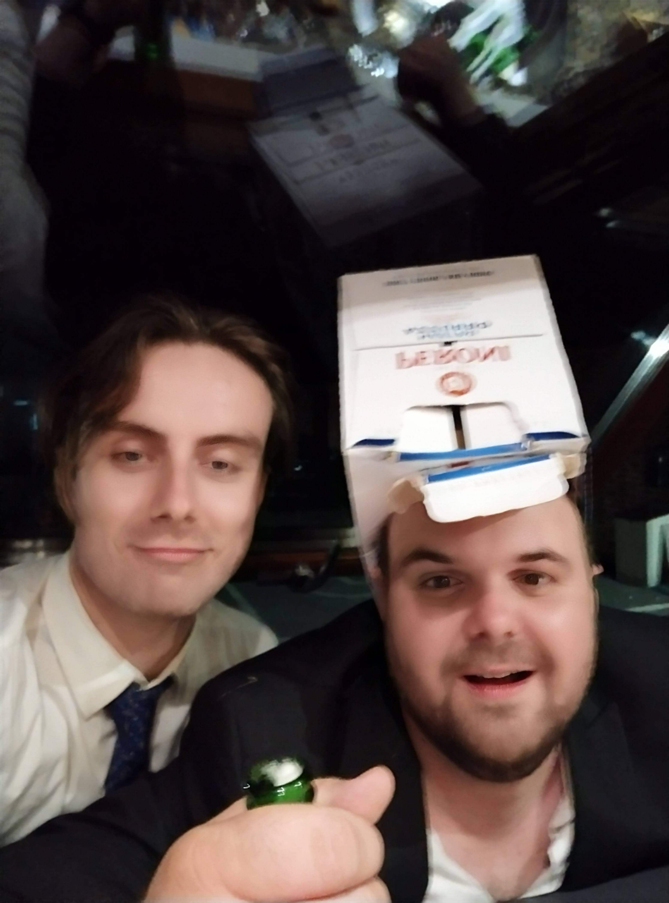
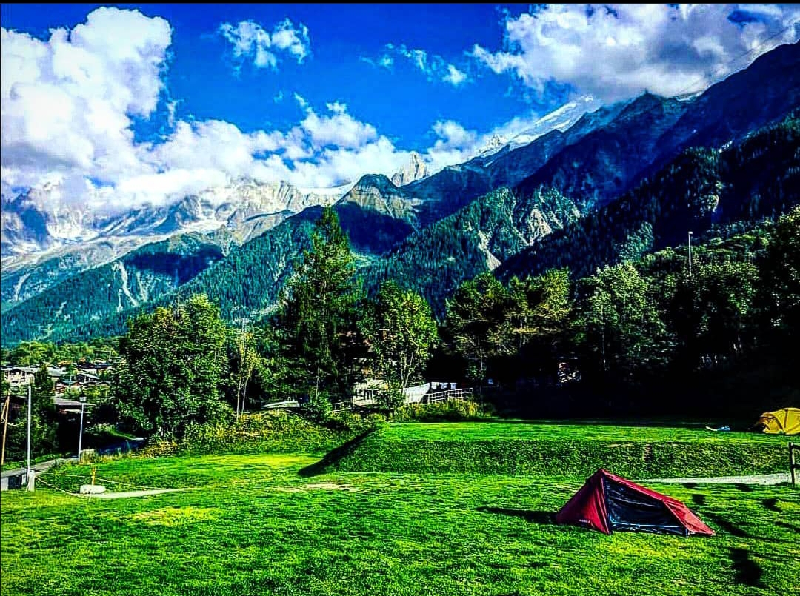
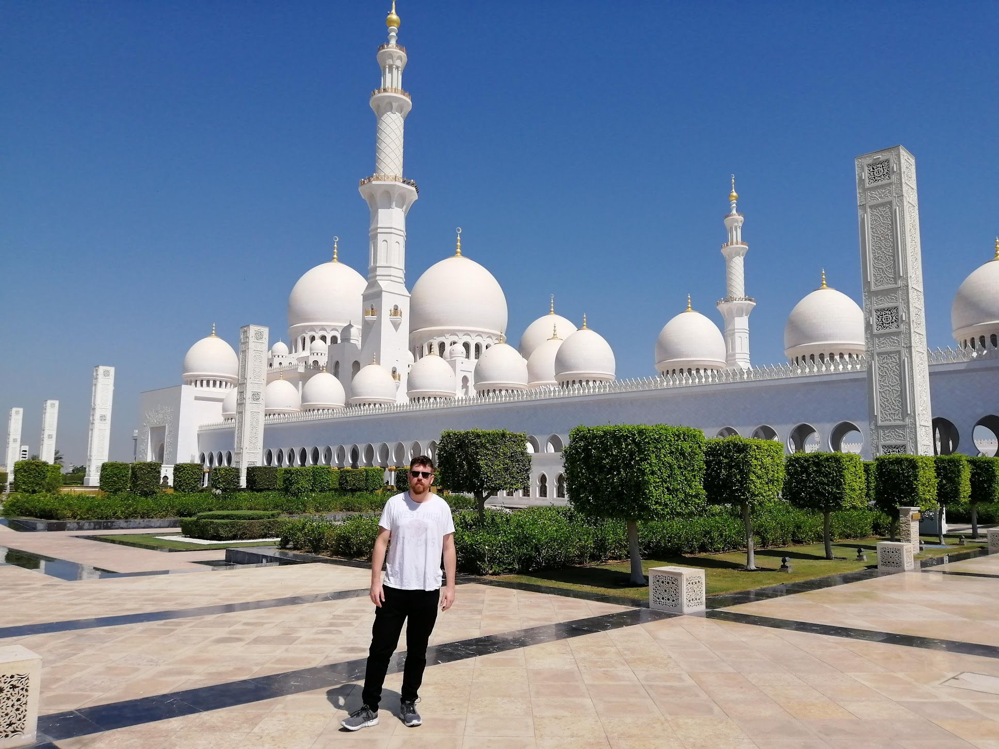
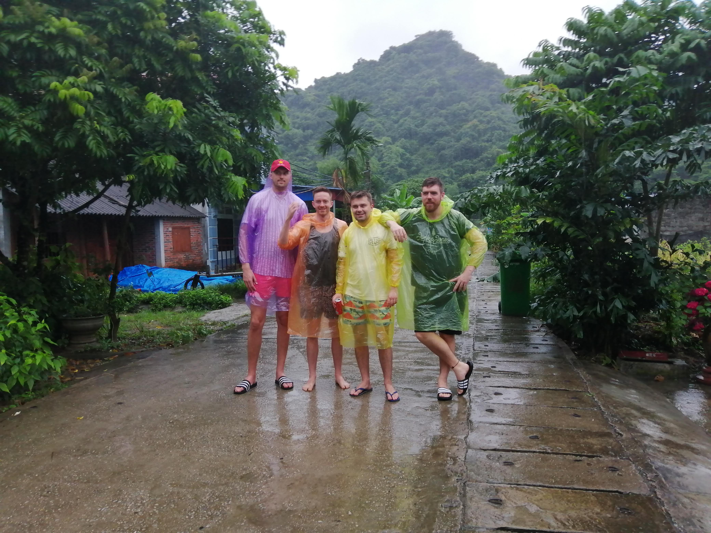

Hello, I'm James

Bio
I was born in central London to an Irish mum and dad I grew up in an area called Kingsbury in North West London. Attending a local primary school, I enjoyed life as a youngster, playing Rugby, Gaelic Football, Swimming and learning how how to play the piano. At 11 I attended the London Oratory School in Fulham. An hour every morning and evening to reach the school by tube I met loads of new kids from different parts of London. I joined the school Rugby Team and stayed in it until I was 17 before leaving for college. I recieved 3 a-levels at Richmond-upon-Thames college before working. I worked in security, deliver driver, behind a bar before becoming a shift leader at on of the busiest bars in central London. I then went to university and got a degree in Nursing including a six months erasmus in Malta. At the school I met seven other lads who would group up to become my closest friends. I was recently best man to one of them.
  Family & friends
I practiced nursing in Camden, Central London prior to joining Le Wagon in Porto. New to the software developer world I wanted a career change for a better work/life balance and allow me to be able to spend more time with my daughter. Family and friends are a huge part of my life. My family both in London and Ireland have always steered me in the right direction and given me invaluable advice. My daughter is the most important person to me and will always be at the forefront of any decision I make. Having a friendship circle with 8 of us in it that is so tight and lasted so long just shows how much our firnedship means to eachother.
  Interests
I have a big interest in sports, mainly; football, rugby, formula one and GAA (a sport very popular in Ireland). Hiking and exploring alpine trails and europeean cities is the idea of an amazing weekend to me and I hope to complete the Tour du Mont Blanc next summer. I enjoy travelling with the Middle-East and SE Asia my favourite destinations to date. My next trip is booked for November when I'll spend 2 weeks in Japan.
  